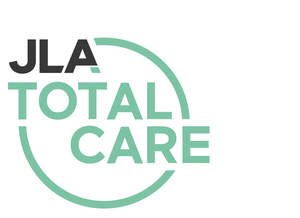

Trade Mark Journal No.2025/014 4 April 2025
UK00004175510 18 March 2025 (37)

- Class 37
- Installation, maintenance and repair services relating to dry cleaning, aqueous cleaning and laundry equipment and machinery, washing machines, drying machines, ironing machines, finishing tables, apparatus for dissolving ozone in water, dishwashing machines, bedpan washing machines, grinding machines, macerators, lifts, stair lifts, electric service lifts, chair hoists, apparatus and instruments for monitoring, controlling and regulating energy consumption, apparatus and instruments for monitoring, controlling and regulating temperature, apparatus and instruments for monitoring, controlling and regulating boilers, apparatus for checking boiler efficiency, electronic monitoring and detection apparatus and instruments, electronic apparatus and instruments for detecting body heat, movement and/or light, security apparatus and equipment, video camera equipment, video recording apparatus, video display apparatus, apparatus for the transmission of video signals, closed circuit television equipment, infra-red light detection apparatus and instruments, passive infra-red receiver motion detection devices, intruder alarms and detection devices, fire alarm apparatus, fire extinguishing apparatus, fire sprinklers, fire blankets, fire break glass units, panic attack alarm apparatus, control panels for security apparatus and equipment, control panels for intrusion detection apparatus, infra-red receiver motion detection devices, wireless intruder alarms and detection devices, wireless control panels for intrusion detection apparatus, surgical, medical, dental and orthopaedic apparatus, instruments and devices, apparatus for the distribution and storing of liquid oxygen, oxygen supply cylinders and apparatus, lifting apparatus, transfer apparatus, hoists and slings, lifting apparatus and transfer apparatus for the bath and the toilet, patient lifts, mobile patient lifts, beds, bed tables, handrails, bars and grab rails, apparatus for lighting, heating, steam generating, cooking, refrigerating, drying, ventilating, water supply and sanitary purposes, refrigerators, freezers, sterilizers, anti-condensation units, humidifiers, de-humidifiers, ventilating, extraction and air conditioning fans, hand dryers, water heaters, water supply and water flushing apparatus, kettles, apparatus, installations and machines for sanitising water, apparatus, installations and machines for controlling the flow of water to bathroom, washroom, cloakroom, lavatory, shower room and changing room fittings, filters for drinking water, laundry and tumble driers, apparatus, installations and machines for filtering, freshening, sanitising and purifying air, electric cooking utensils, extractor hoods, cookers, ovens, cooking hobs, heaters, boilers, domestic boilers, electric blankets, toilet seats, wheeled toilet seats, toilet seat frames, toilet seat raisers, handrails and bars for toilets, bathrooms, baths and showers, furniture, bathroom furniture, changing tables, trolleys and mats for babies, nappy changing tables and installations, dispensers for dispensing towels, dispensers for holding towels, dispensers for sanitary towels and dispensers for paper and hand towels, fixed towel dispensers and cabinets for containing roller towels; rental of dry cleaning, aqueous cleaning and laundry equipment and machinery; rental of washing machines, drying machines, ironing machines and finishing tables, apparatus for dissolving ozone in water; provision of laundry services; information and advice relating to the aforesaid services; fire alarm installation and repair; maintenance of fire alarm installations; advisory services relating to the installation of fire prevention equipment; providing information relating to the repair or maintenance of fire alarms; alarm, lock and safe installation, maintenance and repair; fire detection system installation; plumbing; plumbing installation, maintenance and repair; air conditioning contractor services; hvac (heating, ventilation and air conditioning) installation, maintenance and repair; installation of sanitary apparatus; repair of sanitary installations; installation of ventilation and dust extraction systems; advisory services relating to the installation of solid fuel heating systems; installation, repair and maintenance of heating equipment; heating contractor services; construction of geothermal heating installations; maintenance and repair of access control systems; installation of access control systems; installation of access control as a service (acaas) hardware; installation of security system; maintenance and repair of security systems; information services relating to installation of security systems; emergency servicing of water supply apparatus; consultancy services relating to the repair of buildings; air conditioning contractor services; installation, maintenance and repair of air-conditioning apparatus; providing information relating to the repair or maintenance of air conditioning apparatus; retrofitting of heating, ventilating and air conditioning installations in buildings; routine servicing of air conditioning apparatus; installation of ventilation and dust extraction systems; maintenance and repair of ventilating apparatus.
JLA Limited
Representative: Eversheds Sutherland (International) LLP